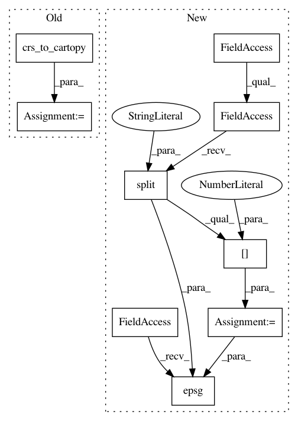

c43f66e850f43844ad10db14593b3519bf9c36aa,core/eolearn/core/visualizations.py,,plot_raster,#Any#Any#Any#Any#,317
Before Change
:return: visualization
:rtype: holoviews/geoviews/bokeh
cartopy_crs = crs_to_cartopy(eopatch)
data_da = array_to_dataframe(eopatch, (feature_type, feature_name))
data_min = data_da.values.min()
data_max = data_da.values.max()
data_levels = len(np.unique(data_da))
After Change
:return: visualization
:rtype: holoviews/geoviews/bokeh
epsg_number = eopatch.bbox.crs.split(":")[1]
data_da = array_to_dataframe(eopatch, (feature_type, feature_name))
data_min = data_da.values.min()
data_max = data_da.values.max()
data_levels = len(np.unique(data_da))
data_levels = 11 if data_levels > 11 else data_levels
data_da = data_da.where(data_da > 0).fillna(-1)
vis = data_da.hvplot(x="x", y="y",
crs=ccrs.epsg(epsg_number)).opts(clim=(data_min, data_max),
clipping_colors={"min": "transparent"},
color_levels=data_levels,
alpha=alpha)
In pattern: SUPERPATTERN
Frequency: 3
Non-data size: 9
Instances
Project Name: sentinel-hub/eo-learn
Commit Name: c43f66e850f43844ad10db14593b3519bf9c36aa
Time: 2019-03-25
Author: andrej.burja@gmail.com
File Name: core/eolearn/core/visualizations.py
Class Name:
Method Name: plot_raster
Project Name: sentinel-hub/eo-learn
Commit Name: c43f66e850f43844ad10db14593b3519bf9c36aa
Time: 2019-03-25
Author: andrej.burja@gmail.com
File Name: core/eolearn/core/visualizations.py
Class Name:
Method Name: plot_vector_timeless
Project Name: sentinel-hub/eo-learn
Commit Name: c43f66e850f43844ad10db14593b3519bf9c36aa
Time: 2019-03-25
Author: andrej.burja@gmail.com
File Name: core/eolearn/core/visualizations.py
Class Name:
Method Name: plot_data